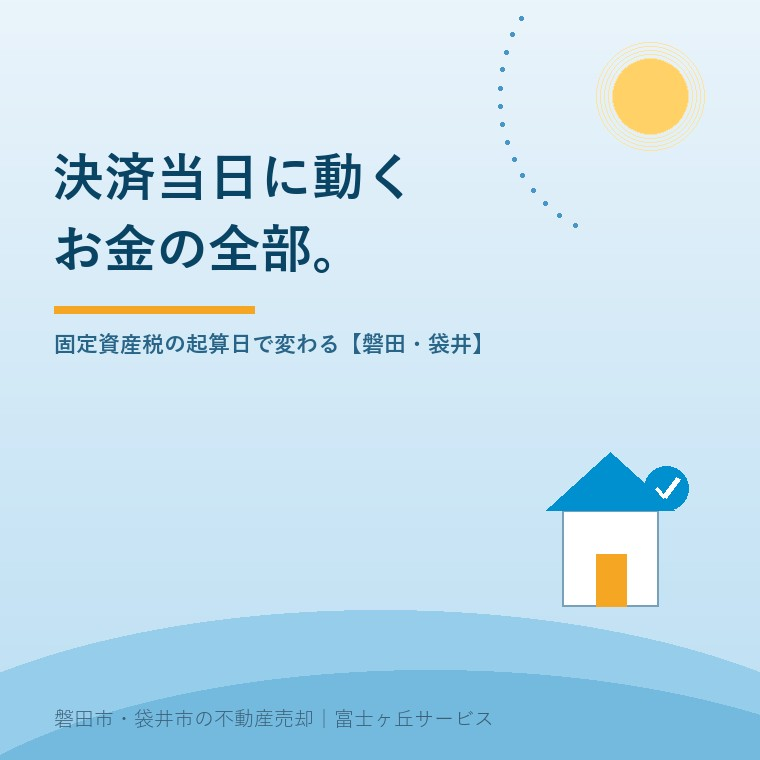

2026年8月9日｜カテゴリ：相場・地域・売却実務／コスト・税・制度

この記事の要点
Q. 実家が2,000万円で売れることになりました。決済の日に、2,000万円がそのまま振り込まれると思っていていいですか？
A. いいえ。増える分と、その場で出ていく分があります。増えるのは固定資産税・都市計画税の精算金。減るのは抵当権抹消の費用・仲介手数料の残額・（ローンが残っていれば）繰上返済手数料です。そして見落とされがちなのが精算金の計算方法。固定資産税の精算に法律上の根拠はなく、あくまで商慣習です。だから起算日を1月1日にするか4月1日にするかは、売買契約書で決まります。関東は1月1日、関西は4月1日が慣習とされ、静岡県西部では1月1日起算が主流。年税額12万円の実家を9月1日に引き渡す場合、1月1日起算なら買主負担は40,109円、4月1日起算なら69,698円。差は約3万円で、これは丸ごと売主の手取りに響きます。契約書の「公租公課の分担」条項は、署名する前に必ず読んでください。磐田市・袋井市では、介護施設の運営から不動産事業を始めた富士ヶ丘サービスのような「介護×不動産」専門の会社に相談するという選択肢があります。
決済の日、みなさん驚かれます。テーブルの上に、思っていたより多くの紙と数字が並ぶからです。
売買代金の領収書、精算金の領収書、司法書士への費用の明細、仲介手数料の請求書、抵当権抹消の書類、鍵の引渡書。時間にして1時間ほど。その1時間で、売主の手取りは最終的に確定します。
ところが、この1時間の中身を事前にきちんと説明されている売主は、驚くほど少ない。「当日、印鑑と身分証を持ってきてください」で終わってしまう。今日は、その1時間を全部開いてお見せします。
決済は銀行の営業日・営業時間内に行います。買主が住宅ローンを使う場合は、その融資を実行する金融機関の店舗で。現金決済でも、売主の口座がある金融機関の応接室を借りることが多いです。午前中の設定が圧倒的に多いのは、司法書士がその足で法務局へ向かい、その日のうちに登記を申請するためです。
| 順番 | やること | 誰が主役か |
|---|---|---|
| ① | 司法書士による本人確認と書類確認。運転免許証などの顔写真付き身分証、印鑑証明書、登記識別情報（権利証）、固定資産評価証明書などを確認 | 司法書士 |
| ② | 司法書士が「登記できます」と宣言する。ここが実質的なゴーサイン | 司法書士 |
| ③ | 買主のローン実行→売主口座へ残代金の振込。同時に固定資産税等の精算金も振り込まれる | 買主・金融機関 |
| ④ | 着金確認。売主が窓口で記帳するか、担当者が入金を確認する | 売主 |
| ⑤ | 売主が領収書を発行し、その場で支払うものを支払う（抵当権抹消費用・仲介手数料の残額など） | 売主 |
| ⑥ | 鍵の引渡しと付帯設備の説明。引渡完了確認書に署名 | 売主・買主 |
| ⑦ | 司法書士が法務局へ。抵当権抹消→所有権移転→（買主の）抵当権設定を連続で申請 | 司法書士 |
④の着金確認が済むまでは、絶対に鍵を渡しません。これは売主を守るための鉄則です。売却の段取りと期間の最終工程が、この1時間だと思ってください。
入ってくる側から見ます。売主の口座に入るのは、次の合計です。
| 名目 | 内容 |
|---|---|
| 売買代金の残金 | 売買代金から、契約時に受け取った手付金を差し引いた額 |
| 固定資産税・都市計画税の精算金 | 引渡日以降の分を、買主から売主へ。本記事の主題 |
| 管理費・修繕積立金の精算金 | マンションの場合。日割りで買主から売主へ（前払い分がある場合） |
| 水道・下水道等の精算 | 実務では引渡日で名義変更し、精算しないことも多い |
「手付金を引く」を忘れる方がいます。2,000万円の売買で手付100万円なら、当日振り込まれるのは1,900万円＋精算金です。手付は契約日にもう受け取っています。
ここが出発点です。地方税法上、固定資産税・都市計画税の納税義務者は賦課期日である1月1日現在の所有者です。磐田市の説明も明快で、賦課期日は毎年1月1日現在、税率は固定資産税1.4％、都市計画税0.3％（市街化区域内）です。
つまり、年の途中で売っても、その年度の納税義務者は売主のまま変わりません。市役所は買主に請求しませんし、途中で税額を分けてもくれません。
それでは売主が気の毒だ、というので、「引渡日以降の分は買主が売主に払う」という当事者間の取り決めが生まれました。これが精算です。税金の分担ではなく、売買代金の一部として授受される私的な約束にすぎません。
根拠が法律でないということは、ルールが契約書で決まるということです。だから地域によって慣習が違い、同じ物件でも金額が変わります。
一般に、関東は1月1日起算、関西は4月1日起算が慣習とされています。4月1日起算は、固定資産税が4月1日から翌年3月31日までの年度に対応する税だという考え方に基づくものです。近年は1月1日起算が広がっています。
具体例で見ます。年税額（固定資産税＋都市計画税）12万円の実家を、2026年9月1日に引き渡す場合。引渡日当日は買主負担とします。
| 1月1日起算 | 4月1日起算 | |
|---|---|---|
| 精算の対象期間 | 2026年1月1日〜12月31日 | 2026年4月1日〜2027年3月31日 |
| 買主の負担期間 | 9月1日〜12月31日＝122日 | 9月1日〜翌3月31日＝212日 |
| 計算 | 12万円×122日÷365日 | 12万円×212日÷365日 |
| 買主が売主に払う額 | 40,109円 | 69,698円 |
| 売主の実質負担 | 79,891円 | 50,302円 |
差額は29,589円。同じ家、同じ引渡日、同じ税額なのに、契約書の1行が違うだけで3万円動きます。
そして重要なのは、年の後半に引き渡すほど4月1日起算が売主に有利、年の前半に引き渡すほど1月1日起算が売主に有利という関係です。
ですから、「どちらが正しい」ではありません。どちらを採用するかを、契約前に知っておくかどうかです。売買契約書には必ず「公租公課等の分担」という条項があります。そこに起算日が書いてあります。読んでください。
磐田市・袋井市を含む静岡県西部では、1月1日起算で契約書が作られることがほとんどです。県境をまたぐ愛知県東部の業者が入る取引でも、この地域では1月1日起算で通っています。
ただし「ほとんど」であって「必ず」ではありません。売主が関西の業者に依頼していたり、買主側が全国展開の会社だったりすると、4月1日起算の書式が出てくることがあります。両者の書式が食い違ったまま契約直前に発覚するのが、いちばん揉めます。値引き交渉のリアルで書いたとおり、金額の話は早いほど痛くありません。
| 期 | 磐田市 | 袋井市 |
|---|---|---|
| 第1期（全期） | 令和8年6月1日 | 令和8年6月1日 |
| 第2期 | 令和8年7月31日 | 令和8年7月31日 |
| 第3期 | 令和8年12月25日 | 令和8年11月30日 |
| 第4期 | 令和9年3月1日 | 令和9年3月1日 |
同じ隣り合う市でも第3期がずれています。口座振替にしている場合、引渡し後も自動で引き落とされ続けますのでご注意ください。
入金を確認したら、今度は出ていきます。決済の席で精算するのが一般的です。
| 費目 | 目安 | 備考 |
|---|---|---|
| 抵当権抹消の登録免許税 | 不動産1個につき1,000円 | 土地1筆＋建物1棟なら2,000円。同一申請で20個を超える場合は上限2万円 |
| 抵当権抹消の司法書士報酬 | 1万円〜2万円程度 | 事務所により差があります |
| 住宅ローンの一括繰上返済手数料 | 0円〜3万円程度 | 金融機関・手続き方法（窓口／ネット）で変わります |
| 仲介手数料の残額 | 約定額の半金が一般的 | 契約時に半金、決済時に半金。400万円超は「売買代金×3％＋6万円＋消費税」が上限 |
| 住所変更登記・相続登記 | 不動産1個につき1,000円＋報酬 | 登記名義人の住所が現住所と違う場合に必要 |
| （契約時に済）印紙税 | 1,000万円超5,000万円以下で1万円 | 軽減措置。令和9年3月31日までに作成される契約書が対象 |
買主側が負担する所有権移転登記の登録免許税は、参考までに土地1.5％（令和8年度税制改正で令和11年3月31日まで3年延長）、建物2.0％（自己の居住用の住宅用家屋なら0.3％／令和9年3月31日まで）です。売主の負担ではありませんが、買主の資金計画に直結するので、値段の交渉の背景として知っておくと役に立ちます。
ローンが残っている実家の売却は、ローンが残っている実家、売れますか？で詳しく書きました。決済当日に完済し、その場で抵当権を抹消する段取りになります。また、手数料も含めた最終的な手取りの考え方は売値ではなく手取りで考える実家の売却を、手数料そのものの内訳は仲介手数料のしくみをご覧ください。
この地域ならではの、決済当日のつまずきどころを3つ挙げます。
①筆が多くて、抹消費用が思ったより増える。市街化調整区域や旧集落の実家では、宅地・畑・山林・私道持分と、1つの敷地に見えて登記上は5筆・6筆ということが珍しくありません。抵当権抹消は不動産1個につき1,000円ですから、筆数がそのまま費用になります。事前に登記事項証明書で筆数を数えておけば、当日「聞いていた額と違う」がなくなります。
②相続人が遠方にいて、当日そろわない。共有名義の実家を売る場合、原則として共有者全員が決済に出席するか、実印を押した委任状と印鑑証明書を用意します。印鑑証明書には有効期限（登記申請では発行後3か月以内が原則）がありますので、早く取りすぎても困ります。遠方のご家族がいる場合は、決済日が決まった時点で司法書士から必要書類を指定してもらうのが確実です。
③平日の午前に、全員が動けない。決済は金融機関と法務局が開いている平日に行います。お勤めの相続人には有給を取っていただくことになる。だからこそ日程は1か月前から押さえる。お盆や年末年始をはさむ時期は、金融機関の融資実行が混みますので、なおさらです。
富士ヶ丘サービスは磐田市見付で介護施設を運営するところから不動産事業を始めました。ご家族が遠方にお住まいで、施設に入られたご本人の代わりに手続きを進める──そういう決済に何度も立ち会っています。当日いくら入って、いくら出るのか。その1枚を、決済の1週間前までにお渡しするのが私たちのやり方です。当日に初めて数字を見る、という状況を作らないためです。
決済の日は、長い実家じまいの最後の1時間です。緊張されて当然ですが、中身が分かっていれば、あとは座って印鑑を押すだけになります。
逆に言えば、その1時間で初めて数字を見せられる状態は、健全ではありません。契約書に署名する前に、「当日いくら入って、いくら出ますか」と一言聞いてください。その一言に、きちんと1枚の紙で答えてくる会社かどうか。それが、いい担当者を見分ける最後の物差しになります。
ふじがおか実家カルテ｜決済までの数字を、先にお見せします
「当日いくら入って、いくら出るか」を1枚に。
ご住所と、お手元の固定資産税の納税通知書をご用意ください。年税額・想定売却価格・精算金の目安（1月1日起算）・抵当権抹消の筆数と費用・仲介手数料・想定手取りをまとめてお渡しします。売却をお決めでなくても構いません。数字を見てから考えていただければ十分です。
本記事は2026年8月9日時点の公開情報に基づく一般的な解説です。固定資産税・都市計画税の精算は法令に基づく制度ではなく当事者間の合意（商慣習）であり、起算日・日数の分母・端数処理・引渡日当日の負担者などはすべて売買契約書の定めによります。本記事の計算例は年税額12万円・2026年9月1日引渡し・365日按分・引渡日当日買主負担という前提での試算です。納期限・税率は各市の公表内容が最新です。登録免許税・印紙税の軽減措置には適用期限と要件があり、改正により変わります。譲渡所得の申告、精算金の取扱いは税理士または所轄税務署に、登記手続は司法書士にご確認ください。個別のご相談は当社までどうぞ。
磐田市・袋井市の実家じまい・相続空き家相談
固定資産税通知書だけでも相談できます
住所があいまいでも、通知書や写真から名義・道路・農地・残置物の確認順を整理します。カルテ申込またはLINEで状況を送ってください。
富士ヶ丘サービス株式会社／静岡県磐田市見付5789番地1／TEL:0538-31-3308／静岡県知事 (2) 第14083号／代表取締役・宅地建物取引士 大石 浩之